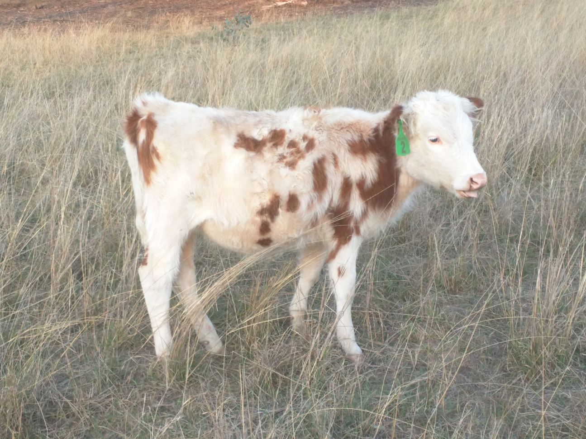

My Experiences
 Jobs and main things learnt from doing them.Working at Bedwells Feed Barn (2017-Present) - How to work in a team environment, the responsibilities which come with being employed by somebody else, working a cash register and customer service.
Dog Walking (2016 - 2018) - How to manage time and how to invest money earnt into other areas of interest carefully.
Breeding Chickens (2016 - 2019) - How to care for large amounts of poultry and keep diseases, lice and mites out of your operation and if they were to get in how to control the outbreak until managed. How to operate incubators, brooders and broody hens. Selling techniques and how to deal with large amounts of customers. Communication skills with people both face to face and on the phone.
Breeding Ducks (2018 - 2019 - Care required to raise waterfowl from incubator, ducklings to adults and how to keep them healthy and contained. Also how to manage waterfowl which need to raise their own young and how to keep them away from predators while ranging over a 20 acre property.
Breeding Sheep (2018 - Current) - How to care for sheep from adults, breeding sheep, pregnant ewes, lambing ewes, lactating ewes and lambs. How to vaccinate, drench, castrate, dock tails, shear and how to pull lambs out which are stuck in their mother while giving birth. How to keep them safe and away from the elements and predators. How to choose the right stud to breed the ewes to produce the best quality or sized lamb depending on the purpose of the sheep.
Raising Goats (2018 - 2019) - How to care for young livestock which are natural wild and have a strong instinct to get out of your contained area. How to bottle feed young goat kids, drench and castrate them.
Raising Cattle (2019 - Current) - How to care for young livestock which are on the bottle and how to manage large livestock (moving, vaccination, drenching, castrating, breaking in cattle).
Raising Quails (2018-2018) - Learn what a pain quails are and the care they require in order for them to have a healthy and productive life.
Work ExperienceStewart Street Vets (1 Week) - The working which goes into keeping pets health and how operations take place (neutering, ceasarians, dental work, etc).